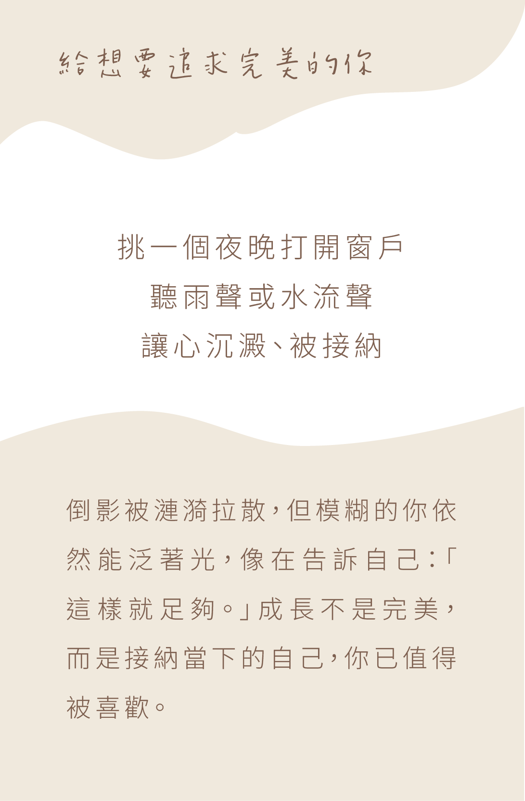
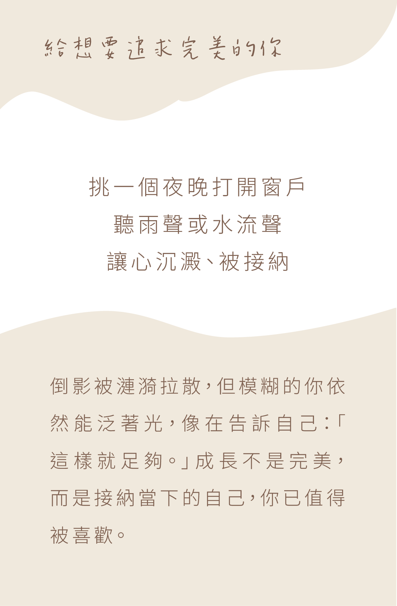
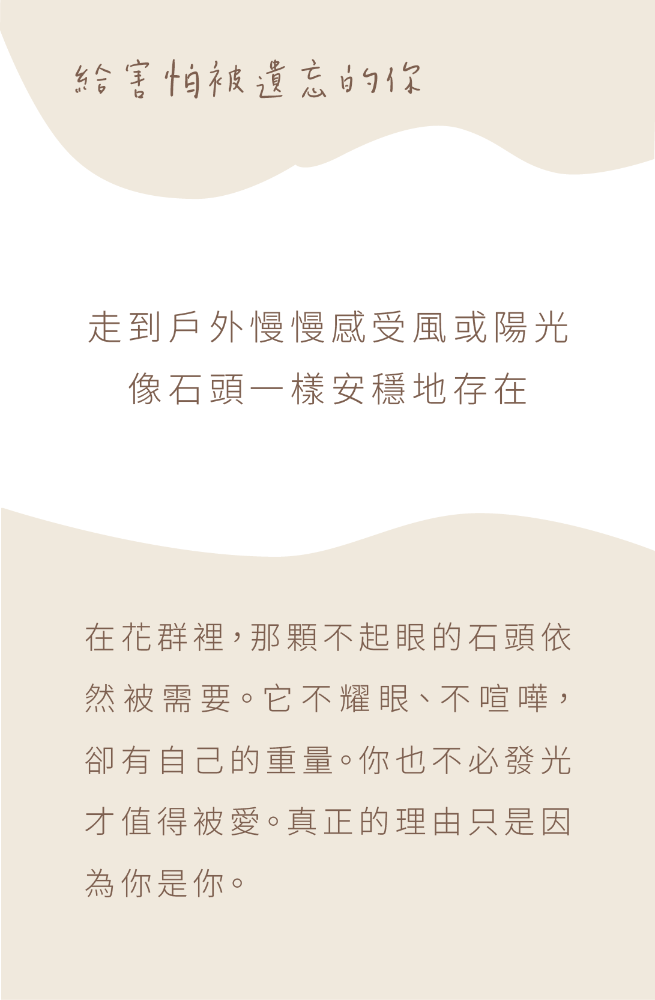
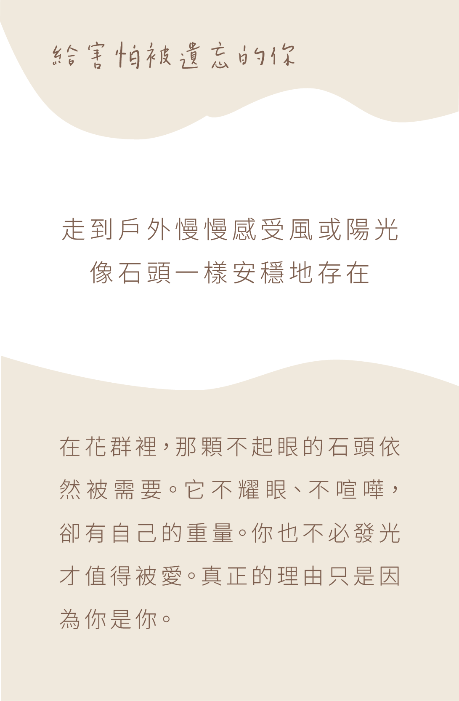

Unseen Breath 獻給悄悄存在的你
湖邊，她坐在大石旁，散落的畫紙像在質疑自己。風輕輕吹來，小鳥停在身邊，
她撿起一張散落的畫，漸漸開始相信，它也能被看見。
湖邊，她坐在大石旁，散落的畫紙像在質疑自己。風輕輕吹來，小鳥停在身邊，
她撿起一張散落的畫，漸漸開始相信，它也能被看見。

《Unseen Breath》是一首關於自我懷疑與慢慢被理解的歌曲。我們都曾質疑自己的努力，否定自己的價值，默默承受著內心的不安與孤單。那種感覺，就像即使付出很多，也總覺得自己不夠好。在沉默中，希望你也能學會放下挑剔與苛責，給自己空間呼吸，重新相信自己的存在與柔軟。允許自己脆弱，不是退縮，而是給心靈一個重新出發的勇氣。旋律像輕風般拂過心間，提醒你：即使脆弱，也值得被看見；即使沉默，也能被理解。
 

 
